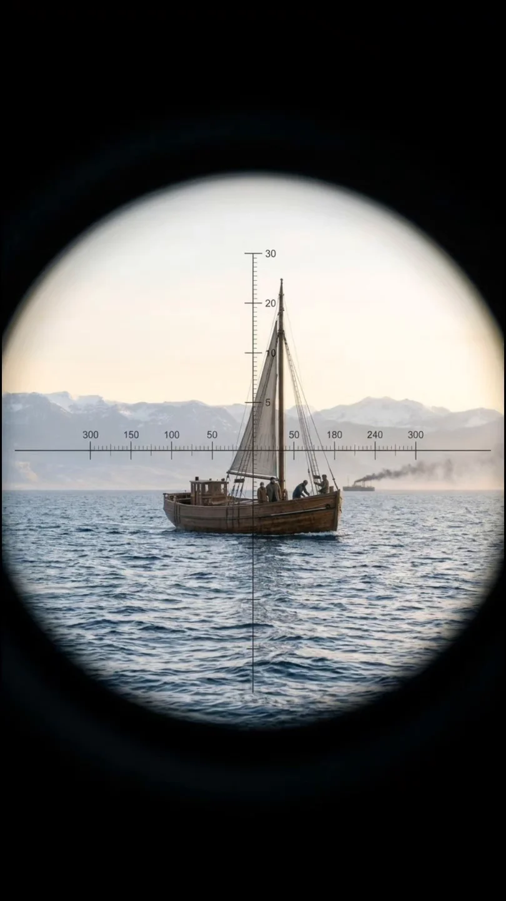

Marko Luttinens böcker
Böcker
Fantasy, historisk spänning och äventyr för yngre läsare.
Fantasy · Marcus-serien
Svarta pilarna
Marcus Wrensk har lämnat sitt gamla liv. Men det förflutna har ännu inte släppt taget.
Se boken på Amazon ↗Historisk roman · Alternativhistoria
The Coal Mirrors
Romanovfamiljen, hemliga uppdrag och priset för att försöka ändra historiens gång.
Köp e-boken ↗Tryckt utgåva ↗
Se boktrailernBarnbok · Äventyr
Blå musslan
En berättelse med hemligheter, spår och unga hjältar.
Se boken på Amazon ↗